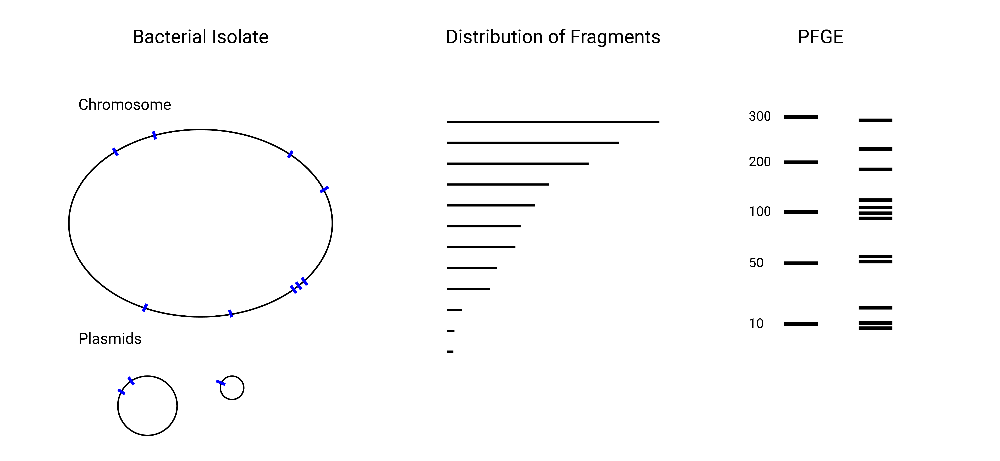
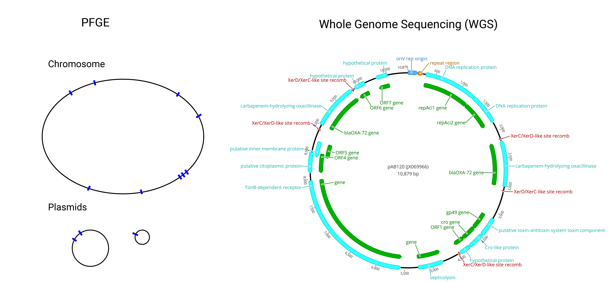
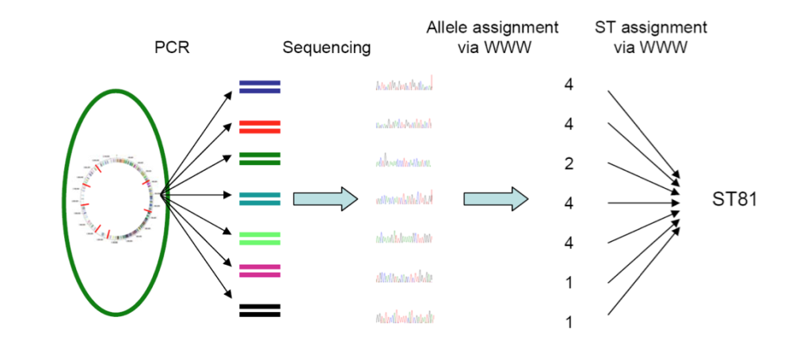
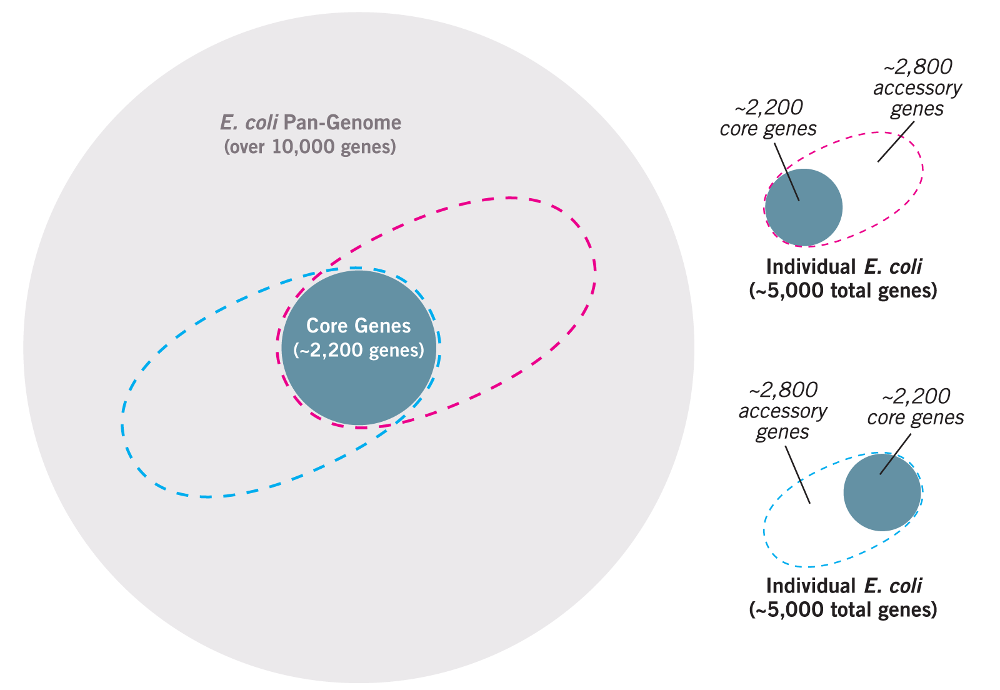
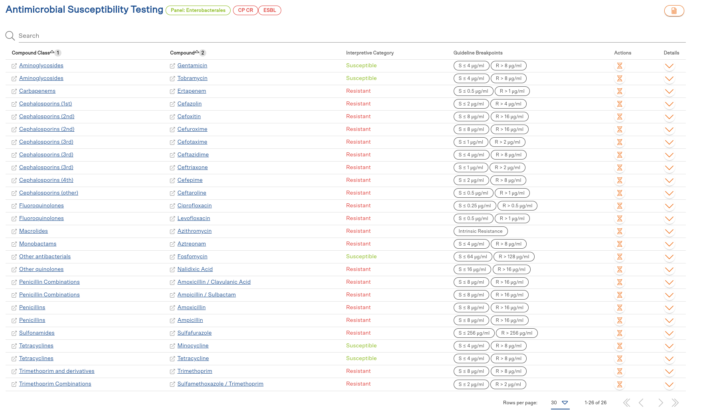
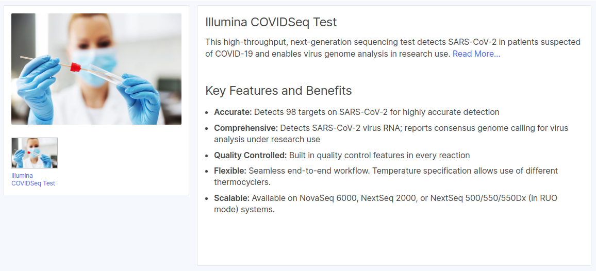
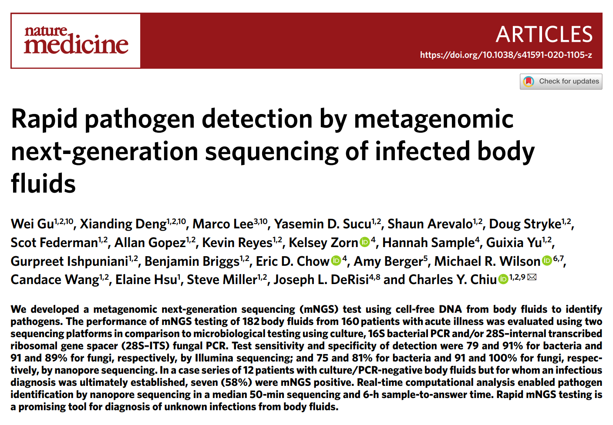
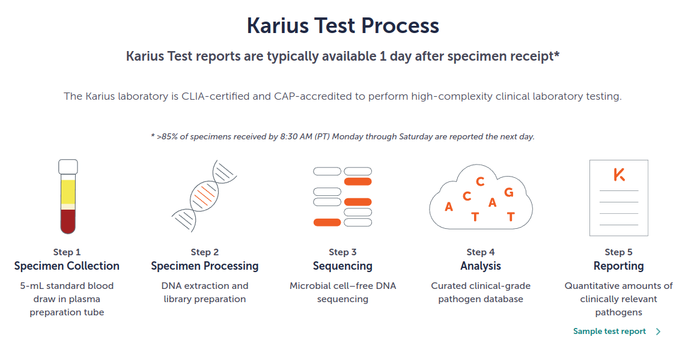
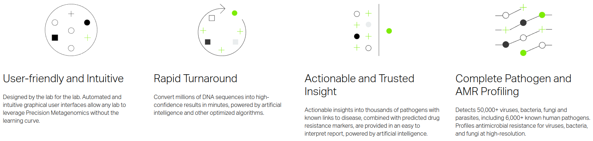

Pop Rocks
The Explosive Potential of Sequencing
Kelsey Florek, PhD, MPH Senior Genomics and Data Scientist Wisconsin State Laboratory of Hygiene September, 2022
Advances in Genomic Characterization
PFGE - Traditional Genotyping
Increasing the resolution of genomic information
Where we have been and where we are going
Sanger Sequencing

Next Generation Sequencing (Illumina)

Increases in data requires advanced analyses (MiSeq)
- 15,000,000,000 ATGC's generated per sequencing run
- 40,000 - 150,000 words in a novel
- average word length in English is 4.79
- one sequencing run would generate 32,963 novels with 95,000 words each
Increases in data requires advanced analyses (Nextseq 2000)
- 360,000,000,000 ATGC's generated per sequencing run
- 40,000 - 150,000 words in a novel
- average word length in English is 4.79
- one sequencing run would generate 791,121 novels with 95,000 words each

Application of Next Generation Sequencing
Bacterial Genomic Classification - Multi Locus Sequence Typing
Bacterial Genetic Makeup
Viral Genomic Classification

Metagenomic Classification
Gene Identification

Phenotypic Prediction - Antimicrobial Susceptibility Test
Next Generation Sequencing in Public Health
Pathogen Genomic Surveillance
Outbreak Investigations
Managing a growing data infrastructure

Next Generation Sequencing and Diagnostic Testing
EUA Approved Illumina COVIDSeq Test
Metagenomic Pathogen Detection
Metagenomic Pathogen Detection
- Illumina
- Bacteria: 79% Sensitivity, 91% Specificity
- Fungi: 91% Sensitivity, 89% Specificity
- Oxford Nanopore
- Bacteria: 75% Sensitivity, 81% Specificity
- Fungi: 91% Sensitivity, 100% Specificity
- Case Series of 12 culture/PCR-negative patients with infectious diagnosis; 7 were mNGS positive
- Real time analysis enabled by Oxford Nanopore enabled pathogen identification in median of 50 minutes and a 6 hour sample to answer time
Metagenomic Pathogen Detection

Metagenomic Pathogen Detection
